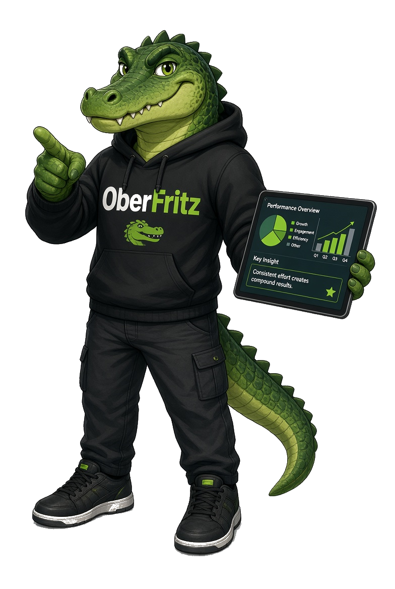

Processos espalhados em todos os lugares
Uma informação está no Excel, outra no WhatsApp, outra no e-mail e outra na cabeça de alguém da equipe. O problema não é falta de informação. É não conseguir enxergar a operação como um todo.
Software · Automação · Infraestrutura · Dados
Sistemas sob medida, integrações e automação para empresas que cresceram mais rápido que os próprios processos.
01 · o que fazemos
Uma solução que faça sentido para a sua operação. Construímos sistemas sob medida para pequenas empresas que querem automatizar processos, centralizar informações e ganhar controle sobre o próprio negócio.
Unimos tecnologia, automação e integração para transformar problemas reais em soluções digitais — do primeiro processo automatizado ao sistema completo que sustenta o crescimento da empresa.

02 · diagnóstico
Os mesmos cinco problemas aparecem em quase toda operação que precisa de tecnologia para crescer — independentemente do segmento, do tamanho ou do tempo de mercado. Quando a operação fica mais complexa, os mesmos gargalos aparecem.
Uma informação está no Excel, outra no WhatsApp, outra no e-mail e outra na cabeça de alguém da equipe. O problema não é falta de informação. É não conseguir enxergar a operação como um todo.
A equipe passa horas copiando dados, preenchendo planilhas e repetindo tarefas que poderiam acontecer sozinhas. O tempo que deveria fazer o negócio crescer é consumido pela operação.
ERP, CRM, WhatsApp, planilhas e outras ferramentas funcionam isoladamente. A equipe acaba fazendo o trabalho que deveria ser feito pela integração entre os sistemas.
Sem informações centralizadas e indicadores confiáveis, decisões importantes acabam sendo tomadas com base em percepção. A empresa sabe que existe um problema, mas não consegue identificar exatamente onde ele está.
A empresa cresce, mas os processos continuam os mesmos. O que funcionava para uma equipe pequena começa a gerar retrabalho, erros, atrasos e dependência de pessoas específicas.
Nenhum desses problemas se resolve comprando mais um software. É preciso entender como a empresa trabalha, identificar onde estão os gargalos e construir uma solução que faça a tecnologia trabalhar a favor da operação.
03 · entregas
Cada peça resolve um pedaço da operação. Juntas, formam a base técnica que sustenta o crescimento da empresa.
Sistemas web sob medida, painéis internos e SaaS construídos a partir do processo real da empresa — não de um template.
web · saas · painéisServidores, containers, deploy automatizado e ambientes que sobem em minutos e não dependem de uma pessoa só.
cloud · docker · devopsControle de acesso, backup testado, monitoramento e boas práticas aplicadas antes do problema aparecer.
acessos · backup · logsInformação centralizada, indicadores confiáveis e painéis que mostram onde está o gargalo — sem depender de planilha.
bi · relatórios · kpisRotinas que rodam sozinhas, integrações entre ERP, CRM e WhatsApp e agentes de IA cuidando do trabalho repetitivo.
integrações · ia · rotinasIntegrações estáveis e documentadas para fazer sistemas que nunca conversaram trabalharem como um só.
rest · webhooks · integraçãoarraste para girar
04 · diferencial
Escrever código é uma das peças da solução. Não é a solução. Um sistema entregue sem entender o processo vira mais uma ferramenta que a equipe evita usar — e é por isso que tanta empresa já trocou de fornecedor três vezes.
O que entregamos é operação funcionando: diagnóstico antes da linha de código, processo mapeado antes do sistema, dados, automação e infraestrutura rodando como uma coisa só.
Não vendemos sistema. Entregamos previsibilidade, controle e tempo de volta para a sua equipe.
05 · método
Quatro etapas, nessa ordem. Cada uma só começa quando a anterior gerou uma decisão clara.
Mapeamos o processo real, ouvimos quem opera e identificamos onde o tempo e o dinheiro estão sendo perdidos. Você sai com o diagnóstico mesmo que não siga com o projeto.
Construímos primeiro a parte que resolve o maior gargalo. Você vê o sistema funcionando cedo, com dado real, e ajusta o rumo antes de qualquer escala.
Módulos, integrações, automações e infraestrutura entregues em ciclos curtos, com acompanhamento semanal e nada de caixa-preta.
Sistema em produção, equipe treinada, documentação entregue e monitoramento ativo. Depois disso, sustentação e evolução conforme o negócio muda.
Receba um diagnóstico com os gargalos da sua empresa e um plano técnico do que automatizar primeiro.

06 · projetos
Alguns exemplos do tipo de problema que resolvemos — cada um começou como um processo manual que não escalava mais.
Indicadores de produção, vendas e estoque em uma tela só, alimentados direto do ERP. Fim do relatório montado à mão toda segunda-feira.
Aplicação, banco e serviços isolados em containers, com publicação automatizada e rollback em um comando.
Do pedido à entrega em um fluxo só: abertura, execução, aprovação e faturamento, com histórico e responsável em cada etapa.
Mensagens recebidas no WhatsApp são classificadas, registradas no CRM e encaminhadas para a pessoa certa, sem digitação manual.
07 · clientes
Depoimentos de quem já passou pelo diagnóstico, pelo MVP e pela entrega.
A gente vivia de planilha e memória. Hoje abro um painel e sei exatamente onde está cada ordem de produção.
O diagnóstico já valeu por si só. Descobrimos que o gargalo não era onde a gente achava que era.
Integraram o ERP com o CRM e o WhatsApp em poucas semanas. Trabalho de digitação que ocupava duas pessoas simplesmente sumiu.
Explicam sem enrolação. Entendi o que estava sendo construído em cada etapa, mesmo não sendo da área técnica.
A gente vivia de planilha e memória. Hoje abro um painel e sei exatamente onde está cada ordem de produção.
O diagnóstico já valeu por si só. Descobrimos que o gargalo não era onde a gente achava que era.
Integraram o ERP com o CRM e o WhatsApp em poucas semanas. Trabalho de digitação que ocupava duas pessoas simplesmente sumiu.
Explicam sem enrolação. Entendi o que estava sendo construído em cada etapa, mesmo não sendo da área técnica.
Subiram tudo em container e o deploy virou rotina. Parou de existir aquele medo de mexer no sistema.
O relatório que a equipe montava em dois dias hoje sai sozinho toda segunda de manhã.
Começamos pequeno, com um MVP. Um ano depois é o sistema que a empresa inteira usa.
Suporte rápido e direto. Quando algo trava, a resposta vem com solução, não com desculpa.
Subiram tudo em container e o deploy virou rotina. Parou de existir aquele medo de mexer no sistema.
O relatório que a equipe montava em dois dias hoje sai sozinho toda segunda de manhã.
Começamos pequeno, com um MVP. Um ano depois é o sistema que a empresa inteira usa.
Suporte rápido e direto. Quando algo trava, a resposta vem com solução, não com desculpa.